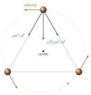

The force of attraction between two stars of masses \(m_1\) and \(m_2\) a distance \(r\) apart is \(\gamma m_1m_2/r^2\). The Starmakers of Kryton place three stars of equal mass \(m\) at the corners of an equilateral triangle of side \(a\). Show that it is possible for each star to revolve round the centre of mass of the system with angular velocity \((3\gamma m/a^3)^{1/2}\).
Find a corresponding result if the Starmakers place a fourth star, of mass \(\lambda m\), at the centre of mass of the system.
The hook
Two bodies attracting each other by gravity can be solved completely, as Newton showed and as Section 10.6 explained: each moves on a conic about their common centre of mass, an ellipse if they are bound together, or a parabola or hyperbola if they have enough energy to escape each other. Add a third body and everything changes. The three-body problem has no general solution in terms of familiar functions, and in 1890 Henri Poincaré discovered that its solutions can be chaotic, the first appearance of chaos in mathematics.
Yet some special solutions are perfectly simple. In 1772 Joseph-Louis Lagrange found that three bodies at the corners of an equilateral triangle can rotate rigidly, the triangle turning like a wheel. This question finds that solution for equal masses. Lagrange’s triangle is not just a curiosity: the Sun, Jupiter and thousands of “Trojan” asteroids form exactly this configuration, and space telescopes are parked at similar points today.
Before you start
For a star to move in a circle of radius \(R\) with angular velocity \(\omega\), what must the total force on it be?
It must have magnitude \(m\omega^2R\) and point towards the centre of the circle. So we need to check that the total gravitational force on each star points at the centre of the triangle, and find the \(\omega\) that makes its size right.
Working it through
Stage 1 The geometry
How far is each corner of an equilateral triangle of side \(a\) from its centre?
The centre lies on each median, two-thirds of the way from the corner. A median has length \(a\sin 60^\circ = \frac{\sqrt3}{2}a\), so the distance from each corner to the centre is \[R = \frac23\cdot\frac{\sqrt3}{2}a = \frac{a}{\sqrt3}.\] By symmetry the centre of the triangle is the centre of mass of three equal stars.
Stage 2 The force on one star
Each of the other two stars pulls with force \(\frac{\gamma m^2}{a^2}\). What is the angle between the two pulls? What is their resultant, and in which direction does it point?
The two pulls point along the two sides of the triangle that meet at the star, so the angle between them is \(60^\circ\). By symmetry their resultant lies along the bisector of that angle, which passes through the centre. Each pull makes \(30^\circ\) with the bisector, so the resultant has magnitude \[2\cdot\frac{\gamma m^2}{a^2}\cos 30^\circ = \frac{\sqrt3\,\gamma m^2}{a^2},\] pointing at the centre (Figure 10.8.1).
Stage 3 The angular velocity
Setting the resultant equal to \(m\omega^2R\): \[m\omega^2\frac{a}{\sqrt3} = \frac{\sqrt3\,\gamma m^2}{a^2}, \qquad\text{so}\qquad \omega^2 = \frac{3\gamma m}{a^3}.\] With this angular velocity, the same calculation applies to each star (by symmetry), so all three move round the centre in circles, keeping the triangle rigid.■
Stage 4 A fourth star at the centre
A star of mass \(\lambda m\) at the centre is at distance \(\frac{a}{\sqrt3}\) from each corner. What extra force does it exert on each corner star? Does the centre of mass move? Does the central star feel any net force?
The central star does not change the centre of mass, and by symmetry the three pulls on it cancel, so it stays at rest. It pulls each corner star towards the centre with force \(\frac{\gamma\lambda m^2}{(a/\sqrt3)^2} = \frac{3\gamma\lambda m^2}{a^2}\). The total inward force on a corner star is now \((\sqrt3 + 3\lambda)\frac{\gamma m^2}{a^2}\), so \[m\omega^2\frac{a}{\sqrt3} = (\sqrt3 + 3\lambda)\frac{\gamma m^2}{a^2}, \qquad \omega^2 = \frac{(3 + 3\sqrt3\,\lambda)\gamma m}{a^3} = \frac{3\gamma m}{a^3}\bigl(1 + \sqrt3\,\lambda\bigr). \qed\]

Looking back
Guess a symmetric solution. We did not solve the three-body problem; we guessed a highly symmetric motion and checked that Newton’s laws allow it.
Symmetry fixes directions. The resultant force had to lie along the bisector, so only its size needed calculating.
Check every body. By symmetry, verifying one star verified all three; the central star needed a separate (easy) check.
What’s really going on
Kepler’s law in disguise
Write the answer as \(\omega^2a^3 = \gamma(3m)\). For two bodies in circular orbit a distance \(a\) apart, Kepler’s third law (an exercise in Section 10.6) says \(\omega^2a^3 = \gamma(m_1 + m_2)\), the total mass. The three stars obey the same law, with the total mass \(3m\). In fact Lagrange showed that the equilateral solution exists for any three masses, not just equal ones: the triangle rotates about the centre of mass with \(\omega^2a^3 = \gamma(m_1 + m_2 + m_3)\). Euler had found a second family a few years earlier, with the three bodies on a rotating straight line. These five configurations (three collinear, two triangular, up to labelling) are the only ones in which three bodies keep the same shape.
Lagrange points
Take \(m_1\) to be the Sun, \(m_2\) a planet, and \(m_3\) a tiny asteroid. The equilateral solution says the asteroid can sit at the third corner of an equilateral triangle with the Sun and the planet, ahead of or behind the planet in its orbit. These are the Lagrange points \(L_4\) and \(L_5\); Euler’s collinear solutions give \(L_1\), \(L_2\) and \(L_3\). Jupiter has over ten thousand known “Trojan” asteroids clustered around its \(L_4\) and \(L_5\) points. The James Webb Space Telescope orbits near the Sun–Earth \(L_2\) point, \(1.5\) million km beyond the Earth, where it can keep the Sun, Earth and Moon all behind its sunshield.
Stability
Would the Starmakers’ triangle last? For equal masses, no: the slightest disturbance grows, and the stars fly apart or collide. Edward Routh showed in 1875 that Lagrange’s triangle is stable only if one mass dominates, precisely when \[27(m_1m_2 + m_2m_3 + m_3m_1) < (m_1 + m_2 + m_3)^2.\] For the Sun and Jupiter this holds comfortably, which is why the Trojans survive. For three equal masses, \(27 \times 3m^2 > 9m^2\), so the configuration is unstable.
In 1887 King Oscar II of Sweden offered a prize for a solution of the many-body problem. Henri Poincaré won it in 1889 with a long memoir on the three-body problem, but while the memoir was being printed an editor found a gap. In correcting it, Poincaré discovered that some solutions behave with “a complexity so astonishing that I cannot even attempt to draw it”: the first glimpse of chaos. The printed copies were recalled and destroyed, at Poincaré’s expense. New special solutions are still being found: in 1993 Cristopher Moore discovered numerically, and in 2000 Alain Chenciner and Richard Montgomery proved, that three equal masses can chase each other round a figure-eight curve. Thousands more periodic orbits have since been found by computer.
The thinking skill
When a problem is too hard to solve in general, look for solutions with as much symmetry as possible. A symmetric guess reduces many unknowns to one or two, and checking it is often easy.
This is a powerful strategy in mathematics and physics: symmetric equilibria, steady states, travelling waves and rigidly rotating configurations are often the first solutions found, and the starting points for studying the rest. The next question is always whether the symmetric solution is stable.
Try this next
Four stars in a square. Four stars of mass \(m\) are placed at the corners of a square of side \(a\). Show that they can rotate rigidly about the centre with \(\omega^2 = \frac{(4 + \sqrt2)\gamma m}{2a^3}\).
Two equal stars and a planet. Two stars of mass \(M\) orbit their centre of mass, a distance \(a\) apart. A planet of negligible mass sits at the centre. Is it in equilibrium? Is it stable to small displacements along the line joining the stars? Perpendicular to it?
Unequal masses. Three stars of masses \(m_1\), \(m_2\), \(m_3\) are at the corners of an equilateral triangle of side \(a\), rotating about their centre of mass \(G\). Show that the gravitational force on \(m_1\) is \(\frac{\gamma m_1(m_1 + m_2 + m_3)}{a^3}\,\overrightarrow{P_1G}\), where \(P_1\) is its position. (Hint: write the forces as vectors and use the definition of the centre of mass.) Deduce Lagrange’s result.
\(n\) stars. \(n\) equal stars sit at the corners of a regular \(n\)-gon inscribed in a circle of radius \(R\). Find \(\omega^2\) for rigid rotation as a sum over \(k\) of \(\frac{1}{\sin(k\pi/n)}\).
Further reading
June Barrow-Green, Poincaré and the Three Body Problem (American Mathematical Society). The story of the prize and Poincaré’s discovery of chaos.
Richard Montgomery, “A new solution to the three-body problem”, Notices of the American Mathematical Society 48 (2001). The figure eight, explained by one of its discoverers; free online.
Florin Diacu & Philip Holmes, Celestial Encounters (Princeton University Press). A popular history of the three-body problem and chaos.